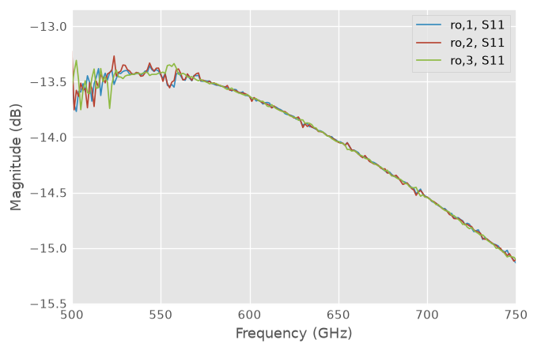
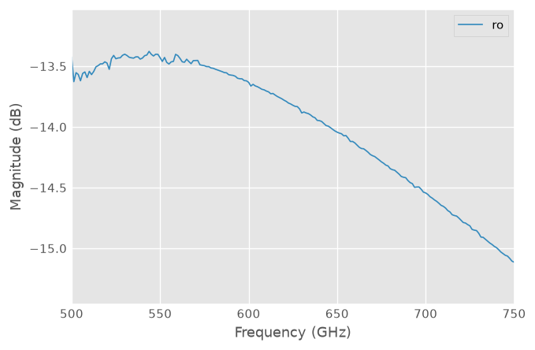
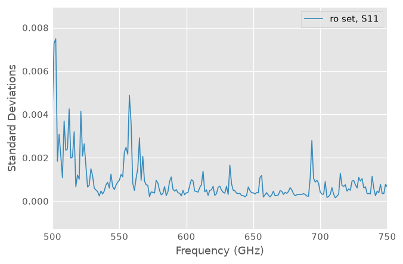
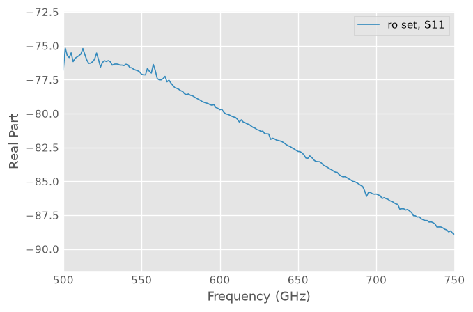
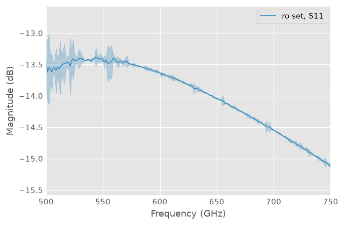
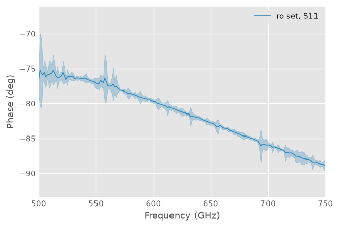
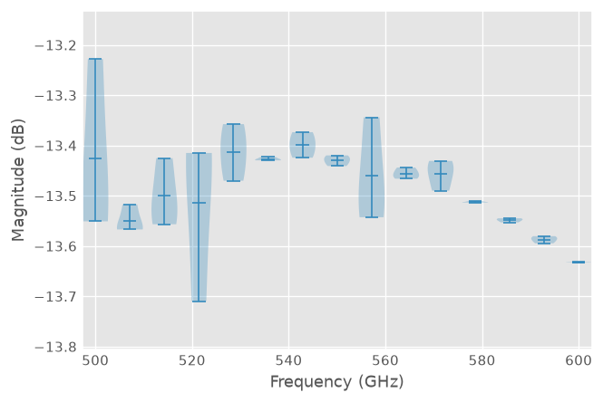
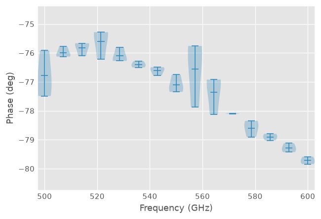

NetworkSet#
Introduction#
The NetworkSet object represents an unordered set of networks. It provides methods iterating and slicing the set, sorting by datetime, calculating statistical quantities, and displaying uncertainty bounds on plots.
Creating a NetworkSet#
Lets take a look in the data/ folder, there are some redundant measurements of a network called ro, which is a radiating open waveguide.
ls data/ro*
-a---- 14/02/2021 12:35 8031 ro,1.s1p
-a---- 14/02/2021 12:35 8030 ro,2.s1p
-a---- 14/02/2021 12:35 8031 ro,3.s1p
-a---- 14/02/2021 12:35 46592 ro_spreadsheet.xls
The files ro,1.s1p , ro,2.s1p, … are redundant measurements on which we would like to calculate statistics using the NetworkSet class.
A NetworkSet is created from a list or dict of Network’s. So first we need to load all of the touchstone files into Networks. This can be done quickly with rf.io.read_all, The argument contains is used to load only files which match a given substring.
[1]:
import skrf as rf
rf.io.read_all(rf.data.pwd, contains='ro')
[1]:
{'ro,1': 1-Port Network: 'ro,1', 500.0-750.0 GHz, 201 pts, z0=[50.+0.j],
'ro,2': 1-Port Network: 'ro,2', 500.0-750.0 GHz, 201 pts, z0=[50.+0.j],
'ro,3': 1-Port Network: 'ro,3', 500.0-750.0 GHz, 201 pts, z0=[50.+0.j]}
This can be passed directly to the NetworkSet constructor,
[2]:
from skrf.networkSet import NetworkSet
ro_dict = rf.io.read_all(rf.data.pwd, contains='ro')
ro_ns = NetworkSet(ro_dict, name='ro set')
ro_ns
[2]:
3-Networks NetworkSet: [1-Port Network: 'ro,1', 500.0-750.0 GHz, 201 pts, z0=[50.+0.j], 1-Port Network: 'ro,2', 500.0-750.0 GHz, 201 pts, z0=[50.+0.j], 1-Port Network: 'ro,3', 500.0-750.0 GHz, 201 pts, z0=[50.+0.j]]
A NetworkSet can also be constructed directly from:
a directory containing Touchstone files:
NetworkSet.from_dir(),a zipfile of touchstones files:
NetworkSet.from_zip(),a dictionary of s-parameters:
NetworkSet.from_s_dict(),a (G)MDIF (.mdf) file:
NetworkSet.from_mdif(),a CITI (.cti) file:
NetworkSet.from_citi().
Accessing Network Methods#
The Network elements in a NetworkSet can be accessed like the elements of list,
[3]:
ro_ns[0]
[3]:
1-Port Network: 'ro,1', 500.0-750.0 GHz, 201 pts, z0=[50.+0.j]
Most Network methods are also methods of NetworkSet. These methods are called on each Network element individually. For example to plot the log-magnitude of the s-parameters of each Network.
[4]:
%matplotlib inline
import skrf as rf
rf.stylely()
ro_ns.plot_s_db()
[4]:
[None, None, None]

Statistical Properties#
Statistical quantities can be calculated by accessing properties of the NetworkSet. To calculate the complex average of the set, access the mean_s property
[5]:
ro_ns.mean_s
[5]:
1-Port Network: 'ro set', 500.0-750.0 GHz, 201 pts, z0=[50.+0.j]
Note
Because the statistical operator methods are generated upon initialization their API is not explicitly documented in this manual.
The naming convention of the statistical operator properties are NetworkSet.{function}_{parameter}, where function is the name of the statistical function, and parameter is the Network parameter to operate on. These methods return a Network object, so they can be saved or plotted in the same way as you would with a Network. To plot the log-magnitude of the complex mean response
[6]:
ro_ns.mean_s.plot_s_db(label='ro')

Or to plot the standard deviation of the complex s-parameters,
[7]:
ro_ns.std_s.plot_s_re(y_label='Standard Deviations')

Using these properties it is possible to calculate statistical quantities on the scalar components of the complex network parameters. To calculate the mean of the phase component,
[8]:
ro_ns.mean_s_deg.plot_s_re()

Plotting Uncertainty Bounds#
Uncertainty bounds can be plotted through the methods

[10]:
ro_ns.plot_uncertainty_bounds_s_deg()

Note
The uncertainty bounds plotted above are calculated after the complex number has been projected onto the specified scalar component. Thus, the first plot represents uncertainty in the magnitude component only.
Plotting Violin Plots#
Violin plots are used to get an idea of the distribution at a glance by displaying a probability density at each point, along with the minimum, maximum, and average values by default. Let’s interpolate the frequencies to reduce clutter.
[11]:
ro_ns_interp = ro_ns.interpolate_frequency(rf.Frequency(500, 600, 15, "GHz"))
Violin plots are available for most common network parameters, except for those in the time domain. To plot the log-magnitude and phase of the s-parameters
[12]:
ro_ns_interp.plot_violin("s_db")

[13]:
ro_ns_interp.plot_violin("s_deg")

Reading and Writing#
To write all Networks of a NetworkSet out to individual touchstones,
[14]:
ro_ns.write_touchstone(dir='data/')
[14]:
[None, None, None]
For temporary data storage, NetworkSets can be saved and read from disk using the functions rf.io.read and rf.io.write
[15]:
rf.io.write('ro set.ns', ro_ns)
[16]:
ro_ns = rf.io.read('ro set.ns')
ro_ns
[16]:
3-Networks NetworkSet: [1-Port Network: 'ro,1', 500.0-750.0 GHz, 201 pts, z0=[50.+0.j], 1-Port Network: 'ro,2', 500.0-750.0 GHz, 201 pts, z0=[50.+0.j], 1-Port Network: 'ro,3', 500.0-750.0 GHz, 201 pts, z0=[50.+0.j]]
Export to Excel, csv, or html#
NetworkSets can also be exported to other filetypes. The format of the output; real/imag, mag/phase is adjustable, as is the output type; csv, excel, html. For example to export mag/phase for each network into an Excel spreadsheet for your boss[s]
[17]:
ro_ns.write_spreadsheet('data/ro_spreadsheet.xls', form='db')
More info on this can be found in the function, skrf.io.general.network_2_spreadsheet
Named Parameters#
If all the Network objects of a NetworkSet have a params property containing a dictionary of the named parameters and values associated to each Network, it is possible to select the Networks corresponding to a subset of named parameters using the .sel() method.
The following example illustrates this feature.
[18]:
# dummy named parameters and values 'a', 'X' and 'c'
import numpy as np
params = [
{'a':0, 'X':10, 'c':'A'},
{'a':1, 'X':10, 'c':'A'},
{'a':2, 'X':10, 'c':'A'},
{'a':1, 'X':20, 'c':'A'},
{'a':0, 'X':20, 'c':'A'},
]
# create a NetworkSet made of dummy Networks, each define for set of parameters
freq1 = rf.Frequency(75, 110, 101, 'ghz')
rng = np.random.default_rng()
ntwks_params = [rf.Network(frequency=freq1, s=rng.uniform(size=(len(freq1),2,2)),
name=f'ntwk_{m}', comment=f'ntwk_{m}', params=params)
for (m, params) in enumerate(params) ]
ns = rf.networkSet.NetworkSet(ntwks_params)
print(ns)
5-Networks NetworkSet: [2-Port Network: 'ntwk_0', 75.0-110.0 GHz, 101 pts, z0=[50.+0.j 50.+0.j], 2-Port Network: 'ntwk_1', 75.0-110.0 GHz, 101 pts, z0=[50.+0.j 50.+0.j], 2-Port Network: 'ntwk_2', 75.0-110.0 GHz, 101 pts, z0=[50.+0.j 50.+0.j], 2-Port Network: 'ntwk_3', 75.0-110.0 GHz, 101 pts, z0=[50.+0.j 50.+0.j], 2-Port Network: 'ntwk_4', 75.0-110.0 GHz, 101 pts, z0=[50.+0.j 50.+0.j]]
Selecting the sub-NetworkSet matching scalar parameters can be made as:
[19]:
ns.sel({'a': 1})
[19]:
2-Networks NetworkSet: [2-Port Network: 'ntwk_1', 75.0-110.0 GHz, 101 pts, z0=[50.+0.j 50.+0.j], 2-Port Network: 'ntwk_3', 75.0-110.0 GHz, 101 pts, z0=[50.+0.j 50.+0.j]]
[20]:
ns.sel({'a': 0, 'X': 10})
[20]:
1-Networks NetworkSet: [2-Port Network: 'ntwk_0', 75.0-110.0 GHz, 101 pts, z0=[50.+0.j 50.+0.j]]
Selecting the sub-NetworkSet matching a range of parameters also works:
[21]:
ns.sel({'a': 0, 'X': [10,20]})
[21]:
2-Networks NetworkSet: [2-Port Network: 'ntwk_0', 75.0-110.0 GHz, 101 pts, z0=[50.+0.j 50.+0.j], 2-Port Network: 'ntwk_4', 75.0-110.0 GHz, 101 pts, z0=[50.+0.j 50.+0.j]]
[22]:
ns.sel({'a': [0,1], 'X': [10,20]})
[22]:
4-Networks NetworkSet: [2-Port Network: 'ntwk_0', 75.0-110.0 GHz, 101 pts, z0=[50.+0.j 50.+0.j], 2-Port Network: 'ntwk_1', 75.0-110.0 GHz, 101 pts, z0=[50.+0.j 50.+0.j], 2-Port Network: 'ntwk_3', 75.0-110.0 GHz, 101 pts, z0=[50.+0.j 50.+0.j], 2-Port Network: 'ntwk_4', 75.0-110.0 GHz, 101 pts, z0=[50.+0.j 50.+0.j]]
The various named parameter keys and values of the NetworkSet can be retrieved using the dims and coords properties:
[23]:
ns.dims
[23]:
dict_keys(['a', 'X', 'c'])
[24]:
ns.coords
[24]:
{'a': [0, 1, 2], 'X': [10, 20], 'c': ['A']}
Interpolating between the Networks of a NetworkSet#
It is possible to create new Networks interpolated from the Networks contained in a NetworkSet. If no params properties have been defined for each Network of the NetworkSet, the interpolate_from_network() method can be used to specify a interpolating parameter.
[25]:
param_x = [1, 2, 3] # a parameter associated to each Network
x0 = 1.5 # parameter value to interpolate for
interp_ntwk = ro_ns.interpolate_from_network(param_x, x0)
print(interp_ntwk)
1-Port Network: 'ro,1', 500.0-750.0 GHz, 201 pts, z0=[50.+0.j]
An illustrated example is given in the Examples section of the documentation.
It is also possible to interpolate using a named parameter when they have been defined:
[26]:
# Interpolated Network for a=1.2 within X=10 Networks:
ns.interpolate_from_params('a', 1.2, {'X': 10})
[26]:
2-Port Network: 'ntwk_0', 75.0-110.0 GHz, 101 pts, z0=[50.+0.j 50.+0.j]